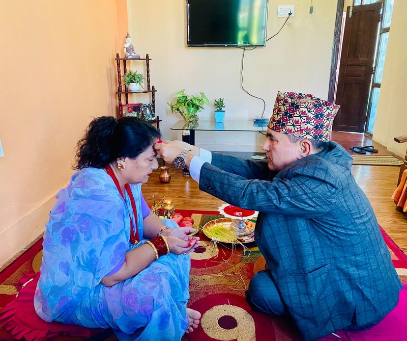

JPG Format Example

About This Image
This is a photo of my dad putting tika on my mom for Dashain. She is in a blue saree sitting on a red rug. The plate in front of them has tika, jamara (the yellow grass) and some apples.
I took this photo myself, so it is the original image on my site. I picked it because it shows tika, which is the main part of Dashain, and it is my own family.
Why JPG Format?
I used JPG because this is a real photo with lots of colors, like the blue saree, red rug and orange wall. JPG is made for photos like this and the file stays small, so the page loads fast.
It is also the biggest of my three images, but it is still only about 108KB. That is small enough for the page to open quickly.
Image source: Original photo by Anant Budhathoki